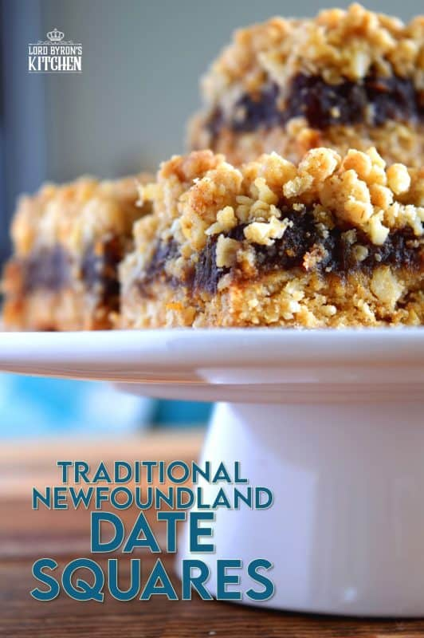

Odin Recipes
White Chicken Lasagna
This dish is a classic winter comfort food, combining the elements
of a chicken alfredo in the comfort of a lasangna shape. Rich, creamy,
cheesey its truly a dish of wonder and comfort.

INGREDIENTS
9 lasagna noodles
- ½ cup butter
- 1 onion, chopped
- 1 clove garlic, minced
- ½ cup all-purpose flour
- 2 cups chicken broth
- 1 ½ cups milk
- 1 teaspoon salt
- 4 cups shredded mozzarella cheese, divided
- 1 cup grated Parmesan cheese, divided
- 1 teaspoon dried basil
- 1 teaspoon dried oregano
- ½ teaspoon ground black pepper
- 2 cups ricotta cheese
- 2 cups cubed, cooked chicken meat
- 2 (10 ounce) packages frozen chopped spinach, thawed and drained
- 1 tablespoon chopped fresh parsley
INSTRUCTIONS
- Boil and drain the lasagna noodles.
- Cook the onion and garlic in butter, then whisk in the flour. Add the broth, milk, and salt.
- Add some of the mozzarella and Parmesan. Season with basil, oregano, and pepper. Set aside.
- Assemble the lasagna according to the recipe.
- Bake in the preheated oven. (350 F) for 35-45 minutes broil for last 10 minutes
Newfie Slush

This classic newfoundland recipe is a holiday favourite, a boozy enjoyable delicacy with that classic twist of cherry.
this one is absolutely meant for that citrus lover as its got heavy citrus basing to it!
INGREDIENTS
- 7 1/2 cups water
- 1/2 cups granulated sugar
- 1 295-mL frozen concentrated lemonade
- 1 295-mL can frozen concentrated orange juice
- 1 48-oz can pineapple juice
- 1 26-oz bottle amber rum
- lemon-lime soda, such as Sprite or 7-Up, to finish
- maraschino cherries, for garnish
INSTRUCTIONS
- Pour water and white sugar into a large pot on high heat and bring to a boil. Reduce to low and simmer until sugar is dissolved and thickens ever-so-slightly, 3 to 5 min. Remove pot from heat.
- Once the mixture is cool, add lemonade and orange juice concentrate and pineapple juice and mix well until dissolved. Add rum.
- Transfer the mixture to a large, freezer-safe plastic container with a lid. (for authenticity use a salt beef container)
- Place mixture in the freezer, at least overnight, stirring periodically (every 12 hrs or so) to ensure it doesn’t freeze solid, until the mixture is frozen into a slush.
- To serve: Spoon 2 scoops of slush with an ice cream scoop into a glass and top with soda. Garnish with a maraschino cherry.
Newfoundland Date Squares

Newfoundland Date Squares are a traditional Newfoundland treat! Slightly sweet, with a crumb topping, and a soft, chewy center, they are just perfect for an afternoon snack with a cup of hot tea! These are a regular treat on the island; no special occasion is needed!
This is a "by heart" recipe so measurements are loosely these you feel looks right!
INGREDIENTS
FILLING
- 2 1/4 cups Dates
- 1 1/2 cups Salted Butter
- 3 Tbspn Sugar
- 1 1/2 Tbspn Vanilla Extract
- 2 cups boiling water
CRUMB COAT
- 2 cups Rolled Oats
- 2 Tspn Baking Powder
- 1 cup Unsweetened Coconut Shredded or Flaked
- 2 cups Flour
- 1 Cup Brown Sugar
- 1 1/2 Cups Butter
- In a saucepan, add the filling ingredients and bring to a low simmer. Simmer, stirring often, for about 20 minutes, or until the mixture becomes very thick. Watch the mixture carefully as it will burn easily in the last few minutes of cooking time. Set aside to cool.
- In a large mixing bowl, add all of the crumb ingredients and use your hands to rub the butter into the dry ingredients. The mixture will form a crumbly topping. By this time, the date mixture is cooled, so preheat your oven to 350 degrees F and prepare a 9×13 inch baking dish by lining it with parchment paper.
- Press half of the crumb topping into the prepared 9×13 baking dish. Press firmly to form a solid base for the date mixture. Pour the date mixture over top and spread it out evenly. Next, evenly distribute the remaining crumb mixture over top, pressing very lightly to push the crumb mixture gently into the date mixture. Bake for 40 minutes. Allow the Date Squares to cool completely before cutting
{kind=link}